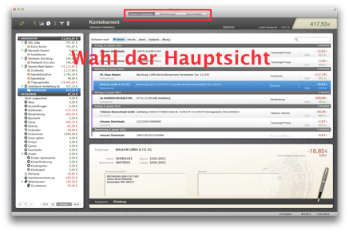

Erste Schritte / Einrichtung
Bevor Pecunia verwendet werden kann, müssen die
Bankzugänge eingerichtet werden.
Pecunia Übersicht
Pecunia ist grob in 3 Bereiche aufgeteilt:
- Konten+Kategoriesicht: Hier veralten Sie Ihre Konten, Kategorien und Umsätze. Dies ist der wichtigste Bereich in Pecunia. Hier können Sie auch verschiedene Berichte (Konten- und Kategorieberichte) erstellen.
- Überweisungssicht: In dieser Sicht erstellen Sie Überweisungen, verwalten Überweisungsvorlagen und senden Ihre Überweisungen an die Bank. Sie erhalten außerdem einen Überblick über alle bereits gesendeten und offenen Überweisungen.
- Dauerauftragssicht: In der Dauerauftragssicht verwalten Sie Ihre Daueraufträge. Sie können Daueraufträge abrufen, ändern, löschen und neue erstellen. Sie haben stets einen genauen Überblick über alle Ihre aktiven Aufträge, konto- und bankübergreifend.
Sie wechseln die Sichten über die 3 Schaltflächen im Kopfbereich von Pecunia.
